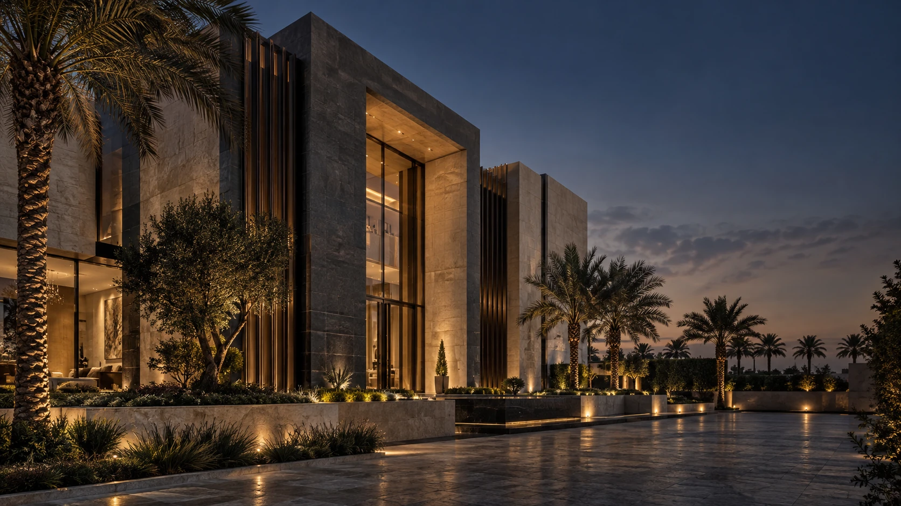
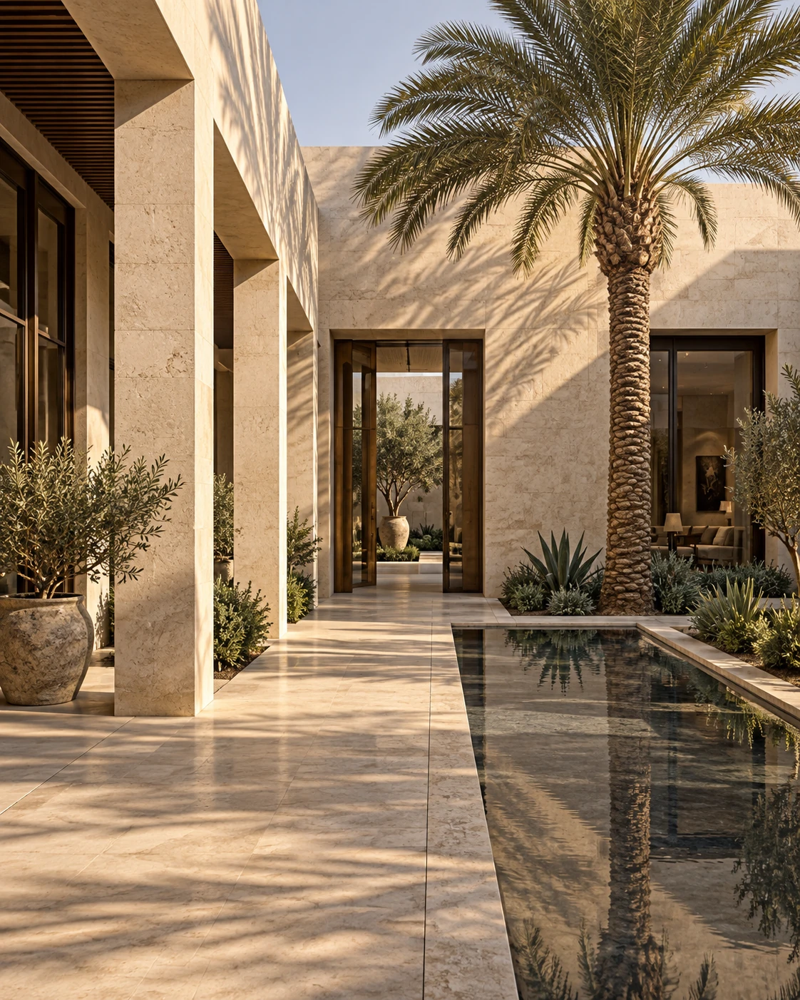

رؤية مترابطة
ننظر إلى علاقة كل تخصص بالآخر، من أعمال الأرض إلى التشطيبات والمرافق

نحن شركة فراس المجد ونربط تخصصات البناء بخدمات الموقع
في شركة فراس المجد، كل مشروع مسؤولية وكل تفصيلة تستحق الإتقان
نجمع المقاولات والتشطيبات والبنية التحتية وخدمات الموقع في نطاق عمل واحد
مواد مناسبة وتنفيذ دقيق
تنسيق واضح ومتابعة مستمرة

ننظر إلى علاقة كل تخصص بالآخر، من أعمال الأرض إلى التشطيبات والمرافق
نبدأ بمناقشة المتطلبات والمواصفات والأولويات قبل تحديد أعمال التنفيذ
نهتم بالتفاصيل وتنسيق الموقع، مع مراعاة الجودة والسلامة واحتياجات المتابعة
أعمال إنشاء وتشطيب وصيانة للمباني ومرافقها
تجهيز المقاهي، التشطيبات، النجارة والأعمال الكهروميكانيكية
تجهيز الأرض، النقل، تنسيق المواقع وشبكات الري